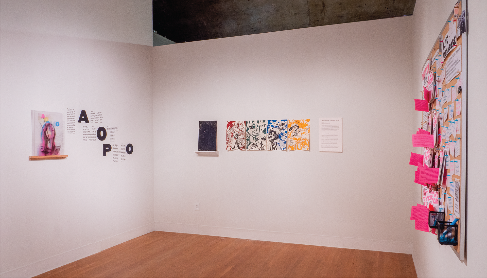
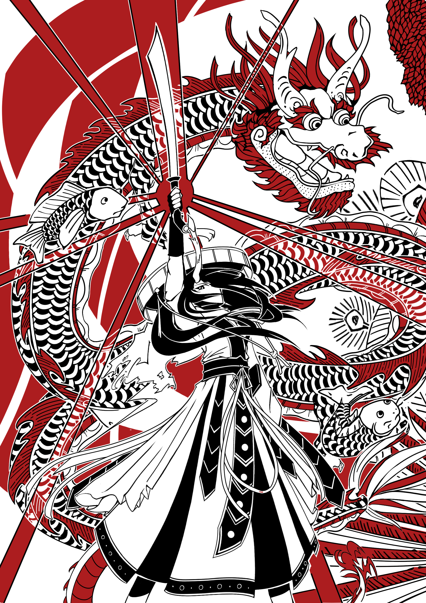
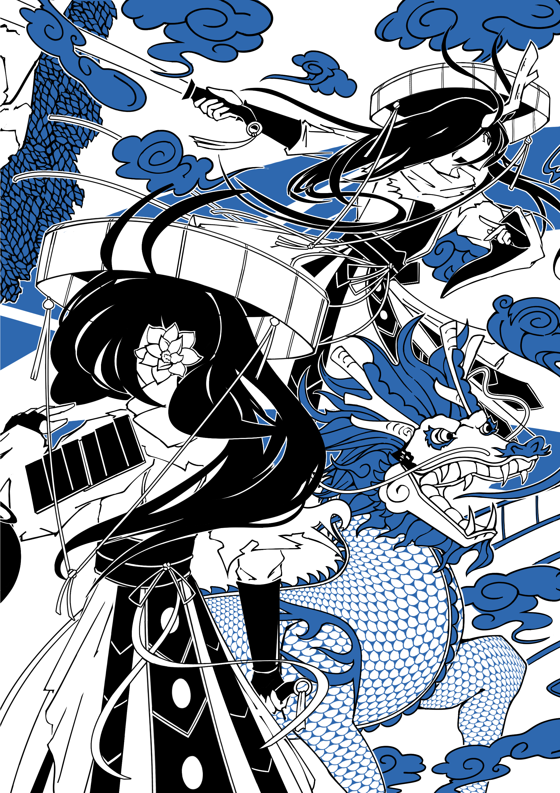
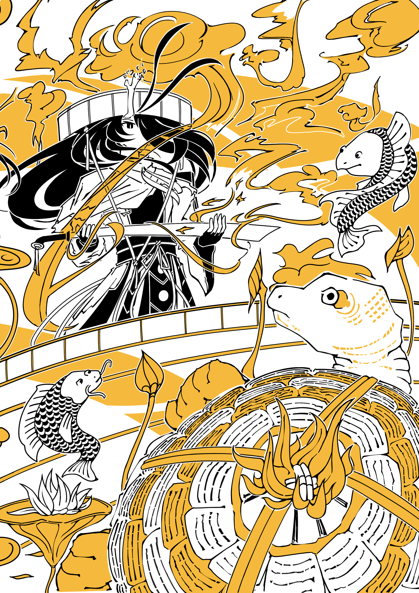

The Distorted Legend of Lê Lợi
print, illustration, exhibition
project overview
A 4-piece screen and wood block print series depicting the tales of Vietnam and the legendary Lê Lợi.
details
tools
Illustrator, Clip Studio Paint, Silkscreen, Letterpress
deliverables
4 Print designs in editions of 45
4 Wood Blocks
Exhibition Space
timeline
Spring 2024



Lê Lợi sets off on his journey after obtaining his legendary sword, Thuận Thiên, from the Dragon King. While there was no real magical sword, Thuận Thiên was rumored to be used as a military enrollment motivator.
On the run from enemy soldiers, Lê Lợi stops to bury a woman’s corpse, asking for protection. After hiding in bushes, the woman’s spirit reappeared as a fox to lead Lê Lợi’s enemies away, leading Lê Lợi to honor her as a protector spirit.

The Warrior and the Kỳ Lân
While fighting against enemy soldiers, one of Lê Lợi’s trusted commanders, Lê Lai, sacrifices himself so that Lê Lợi can escape. Lê Lai’s sacrifice would be recorded in several ways with none being the dominant tale.

With his victory, Lê Lợi travels to Hoàn Kiếm Lake and is asked to return his sword to a golden turtle. Multiple folk tales exist where Lê Lợi travels to the lake with different endings, such as one where he uses the sword to scare off turtles instead.